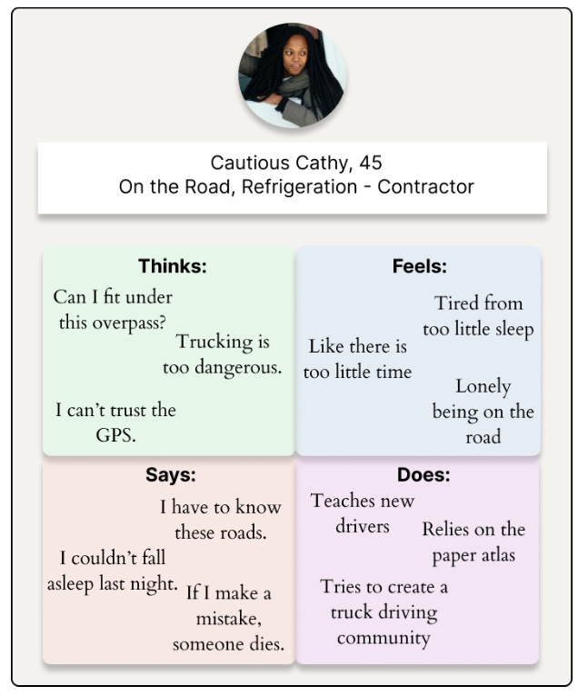
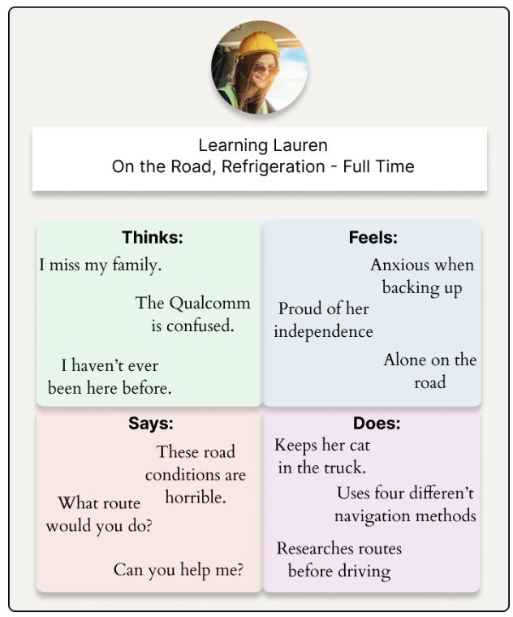
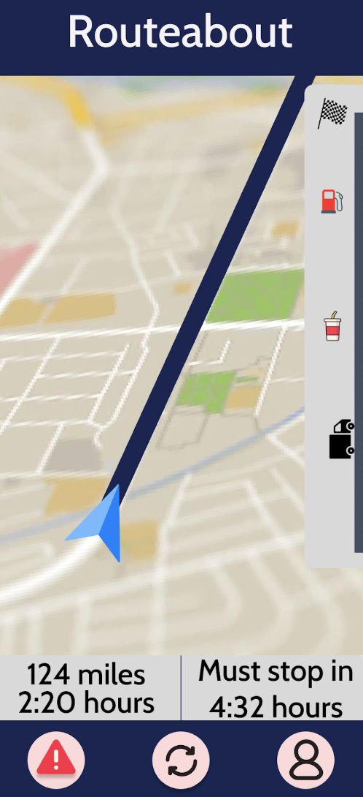

Overview
I believe that the primary pain point for truck drivers comes from unexpected rerouting. Accidents, traffic, and roadblocks can completely disrupt a truck driver’s planned route. This creates a dangerous problem as drivers must quickly decide the alternative route, while still hoping to avoid underpasses and bridges that cannot support their vehicle and cargo’s height and weight. Through interviews and surveys with truck drivers, I believe that a real-time GPS navigation service specifically designed for these scenarios will satisfy this currently unmet need.
For 3 weeks, I interviewed Truck Drivers to attempt to solve their their GPS routing issues.
Finding Users:
I started this project by reminding myself that I am not a truck driver. Truth be told, I actually don’t know how to drive at all. And while this might seem obvious, I know that I should never design projects around my own wants. The choices I make regarding product design should be grounded in the user’s perspective. This meant that I first needed to understand the user before building any product.
To find and validate an unmet need, I knew that online research would not be enough. If I wanted to understand truck drivers, I would need to talk to and gain information from as many as possible. To do this, I used several different approaches. First, I posted on trucking-specific online forums with my goal—of better understanding truck driving pain points—and an application to show interest in participating in my research. Second, I created an Instagram called “TruckerSurvey” and messaged truck driver’s accounts. To find these drivers, I went through the followers lists of several truck-driving influencers and meme pages, as well as looking for individuals who had engaged in posts with trucking-specific hashtags like “#TruckingUSA.” I created three different messages that I sent out to serve as an A/B test for what language was most effective. Next, I created an online Google Ads campaign advertising a survey that I had generated with several questions. Finally, I went to a nearby truck stop where I first observed and then talked with drivers.
I placed a $200 budget on this project. I offered anyone who completed my survey $15 and anyone who submitted to an interview $20. In the end, I stuck within my budget and spent $190. Unfortunately, I did not receive any responses from Instagram messages. However, I did find some success with the other three methods. Specifically, I interviewed two people from the online forum (referred to as Lauren and Cathy), got ten complete survey responses and three partially filled out, and talked to two truck drivers at the rest stop (referred to as Jake and Leo).
Potential Ideas:
I decided to brainstorm a couple of ideas that might be pain points for truck drivers. This allowed me to specifically investigate these subjects during my interviews. These included physical fitness/health, loneliness, navigation, and on-road entertainment. However, after my initial interviews, I was able to determine that the greatest pain points come from navigational challenges.
Findings:
I began this project with my interview with Cathy. This interview helped me build out my initial hypothesis: finding trucking-safe roads is the biggest problem for truck drivers, in that truckers struggle to find roads that meet their specific height and weight requirements. For both Cathy and Lauren, I used a script that briefly went over daily routines and pain areas—with pre-outlined, probing questions to dig deeper into portions that seemed to resonate with interviewees. While the full script can be seen here , I will outline some of the questions and meaningful responses that I received.
Can you walk me through a typical day?
“There are no typical days, and that’s the hardest thing for anyone who hasn’t done this job to understand.” (Cathy, 9:39) ”Car accident shuts down the interstate [...] Well one of the hardest things for a truck driver to do is to navigate in roads that are not on our route. (Cathy, 10:50) “Now, I am out of my route. I can’t rely on GPS to keep me on truck paths. I can’t rely on GPS or Google Maps to not put me in front of a low bridge.” (Cathy, 12:10)
If Google Maps and other technology aren’t compatible with a truck of your height what do you use?
“Back in the day, we were taught how to read maps. Rand McNally has a spiral-bound atlas that's a mapping system of every state. It tells you where way-stations are, where trucking routes are, low bridges, things like that.” (Cathy, 28:15) “A lot of the newer, younger people who were never taught maps, were taught how to rely on GPS. They don’t want to use them. They were never taught how to use them.” (28:43).
After my interview with Cathy, I created this persona and empathy map to make sure I fully understood her perspective. Normally, Cathy prepares for her trip by reviewing what routes are safe for trucks to use in her paper atlas. However, if an accident or some incident occurs which forces her to make a detour, she is then on her own. Her GPS is not meant for truck driving, and she cannot consult the atlas while on the road. These are high-stakes scenarios where she cannot afford to make a mistake.
It was my interview with Lauren that made me realize how important the paper atlas was:
Can you walk me through a typical day?
“So you have fourteen hours to work with on your clock for the day [...] I start writing down my directions of the first shipper and then receiver and then the fuel stops that I need to go to first. So I do that, write it down on a piece of paper—the directions—and if I need to I take my atlas and go through any bridge restrictions.” (Lauren, 2:00). “I type it into my Garmin GPS system, set up my navigation on my Qualcomm.” (Lauren, 3:15). “I would say the hardest part is navigating through the cities you haven’t been to and just watching out for other drivers” (Lauren, 5:28)
Lauren has only been driving for nine months, so she isn’t as knowledgeable about accessible truck routes and cities as Cathy. This has led to her using four main technologies when driving to ensure she reaches her destination. First, she uses “the Qualcomm that comes with the truck” but that isn’t very reliable because it “goes out or tells you that you are going the wrong direction when you aren’t.” Second, she uses a mounted Garmin GPS which is “a lifesaver.” However, she still needs to use her paper atlas map to double-check its instructions. Lastly, she still uses Google Maps’s satellite view to “gauge where the [delivery] truck entrance is.” However, she has heard peers complain that the“images are outdated.”
During my in-person observations, I noticed a pair of drivers who operate as a team, meaning one sleeps while the other drives, spending a few minutes of their short break consulting a paper atlas. When I asked about this, Leo said “I don’t really like paper maps. I can’t use them as I go.” When I asked about the emergency rerouting scenarios that Cathy had mentioned, Leo confirmed their stress before saying “A couple of times, I have shouted at Jake to wake up, so he can figure things out while I drive.” It was these conversations with Leo and Lauren that made me edit my hypothesis. One of the biggest problems for truckers is that they don’t have one consistent source of accurate information to rely upon while they drive. They frequently find themselves flipping between many different technologies, but they do not have a place to turn when they need to quickly change routes. This causes them to have to make uninformed, yet high-stakes decisions.
I used the questions of my survey to see if this was a general truth amongst more truck drivers. For one of my questions, I had drivers rate 6 trucker-navigation technologies from most to least useful. Despite not offering any truck-specific settings, Google Maps got the highest score. The paper atlas was in second place, and the mounted GPS systems by Garmin and Rand were placed below both. These results reveal that truck drivers value high-quality, real-time GPS navigation. It also shows that the paper atlas’ trucking-specific information is helpful but not necessarily always accessible to drivers.
Thus, my research has revealed that the #1 pain point for truck drivers was unexpected rerouting. Older drivers could rely on their knowledge of cities, but newer drivers did not have a resource to help them in these high-speed scenarios. With this, I was ready to build a product to help truck drivers more quickly and safely reroute.
Product Design
Some workflows for this idea are cargo specification, traffic monitoring, dynamic routing, accident alert system, weather integration, rest-stop locator, regulation compliance, satellite feature, and user feedback system. While all of these would be beneficial to include in the ultimate product, many of these are just nice to have features. We want to create a lean minimum viable product (MVP) that first and foremost delivers on our customer’s primary problems, so I will define the input, transformation, and output for cargo specification, traffic monitoring, and dynamic routing.
Vehicle and Cargo Specification:
-
Input: Truck drivers enter specifications about their vehicle and cargo load (specifically maximum height and weight) when setting up their route. Note, that a future nice-to-have feature would be to directly log this data from Cat Scales (a service at many truck spots that weighs your vehicle and cargo).
Transformation: Input data is logged with the route’s requirements and the driver’s profile.
Output: GPS routes are calculated to avoid overpasses and bridges with these restrictions. It also alerts drivers to any parts of the route that are within a close margin.
Traffic Monitoring:
-
Input: Real-time geolocation data is taken from major traffic providers. User reports and travel rates logged by truckers in-app are used to detect congestion and road closures.
Transformation: The system aggregates data from multiple sources to validate traffic detection.
Output: The app flags potential problems to be confirmed by other users (also serves as an input). Truckers receive real-time route and stop updates based on their fuel level and remaining drivable hours.
Dynamic Routing:
-
Input: Truck driver inputs pick-up and drop-off locations, as well as the number of stops they wish to make on the way. Traffic conditions and cargo specifications also are inputs for this workflow. Option for an additional button on the interface to request multiple new routes.
Transformation: The app uses the set constraints to pre-load multiple alternative routes, decreasing in-moment searching time. Routes are updated based on detected traffic flows.
Output:Drivers can receive a new route at a moment's notice that has their current specifications and other requirements. The driver is given the option to accept or decline the new route.
Indicators of Success:
For my MVP, I would have 3 main indicators of success. First, the primary goal of our product is to help truck drivers be more comfortable rerouting as they drive. Thus, our key performance indicator (KPI) should be the total number of successful reroutes. Here, the term successful should refer specifically to reroutes that were accepted by the driver after being prompted. Our other indicators of success should help us better understand the scale of our impact, so we should also consider metrics like total routes mapped or total miles navigated. Lastly, we don’t want our application to be successfully meeting our customer’s needs, so the third main indicator of our success is user retention rate (URR).
Future Considerations:
After navigation troubles, the second most common pain point I heard for on-the-road truck drivers was loneliness: “It’s really lonely being on your own and can cause depression to be worse.” These drivers typically are away from home for weeks at a time—with very little interim social interactions. Thus, I believe that an important future development for this application would be the ability for truck drivers to “check-in” at rest stops. This would help build a community amongst drivers, so they could chat or eat a meal together.
I believe that the initial MVP should focus on growth rather than revenue, yet it is important to highlight what monetization type the app will eventually use. With the t-shirt sizing method, I found that the app should ultimately be monetized through in-app advertisements because this has an extremely large market with manageable complexity and a medium negative impact on user experience.
| Monetization Type: | In-app Advertisements | Enterprise (sold to shipping logistics companies) |
Paid Stop Promotion | Freemium |
|---|---|---|---|---|
| Complexity: | M | L | L | M |
| Market: | XL | L | S | L |
| Negative Impact on User | M | S | L | M |